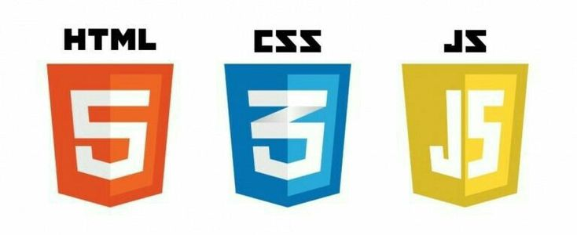

Hello, my name is Divyanshu, and I recently completed this web development project where I utilized Bootstrap, along with HTML, CSS, and JavaScript.
I used Bootstrap to streamline responsive design and enhance the UI components, while custom HTML, CSS, and JavaScript helped me implement specific functionality and styling tailored to the project.
Career counselling is essential for helping individuals make informed career choices, but many students—especially in high school—struggle due to a lack of guidance, limited access to resources, or external pressure.
To address this, we developed a platform that offers career counselling support in just a few clicks, providing access to expert advice, career options, and personalized recommendations.
A key feature is our interactive career roadmap flowchart, specifically designed for high school students.
Whether they have a goal or are still uncertain, the flowchart presents a clear step-by-step path based on their interests, strengths, and academic background.
It breaks down complex career paths into manageable stages like courses, skill-building, and entrance exams, helping students move from confusion to clarity and take confident steps toward their future.
